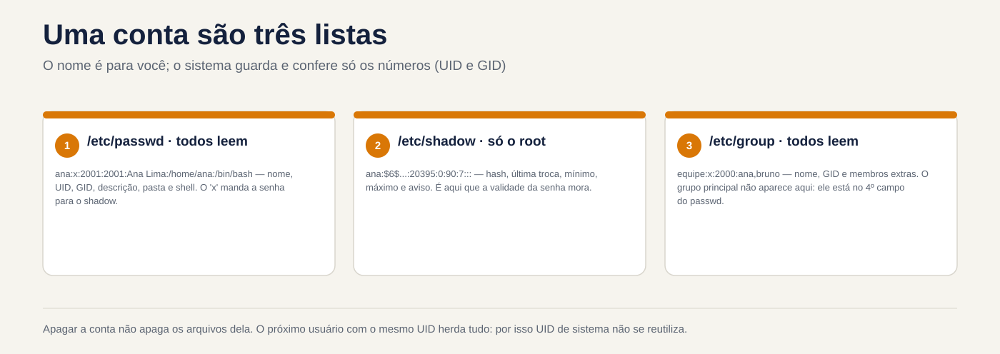
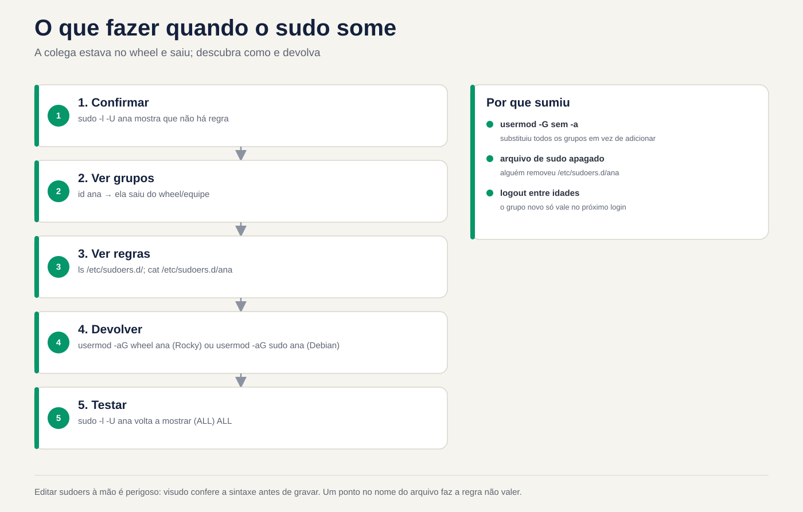

Lezione 2.6 · Utenti e gruppi
Sesta lezione del Modulo 2. La creazione di un utente richiede un comando. Il vero lavoro è nel resto del ciclo: lo stagista che entra lunedì, il collega che cambia settore e ha bisogno di un altro gruppo, il lavoratore in somministrazione con una scadenza per uscire, il dipendente che è stato licenziato alle 17 e non può più entrare alle 17.05. Ogni passo ha un modo giusto e un modo che sembra giusto. usermod -G senza -a rimuove la persona da tutti gli altri gruppi senza preavviso. useradd di Debian crea l'account senza la cartella home. passwd -l blocca la password, ma la chiave SSH continua ad arrivare. E userdel lascia con noncuranza i file che verranno ereditati dall'utente creato successivamente. Oggi esegui l'intero ciclo su entrambe le VM, con gli stessi numeri su entrambe, e crei utenti debian-lab da rocky-lab, utilizzando la chiave e il nickname deb della lezione 2.5.
| File | lezione 2.6 |
|---|---|
| Modulo | M2 · Sistema, utenti e permessi, lezione 6 di 8 |
| Quando | Settimana 5 |
| Alla fine puoi | Leggere /etc/passwd, /etc/shadow e /etc/group campo per campo; sapere da dove provengono gli schemi di un nuovo conto (useradd -D, /etc/login.defs, /etc/skel); creare utenti e gruppi con UID e GID scelti, uguali su più server; inserire e uscire le persone dai gruppi senza eliminarne altri; forzare la modifica della password e impostare la scadenza della password e dell'account; bloccare un account reale, inclusa la chiave SSH; eliminare un account senza lasciare file orfani; seguire uno script quando un utente non riesce ad accedere |
| Articoli di prova | LE 015.2 (creare utenti e gruppi: /etc/passwd, /etc/shadow, /etc/group, /etc/skel, useradd, groupadd, passwd) · LPIC-1 107.1 (gestire account utenti e gruppi: useradd, usermod, userdel, groupadd, groupmod, groupdel, passwd, chage, getent, /etc/skel, /etc/login.defs) · RHCSA (creare, eliminare e modificare utenti locali; modificare password e regolare la scadenza delle password; creare, eliminare e modificare gruppi locali e chi appartiene ad essi; configurare l'accesso come superutente) |
| Prerequisiti | lezione 2.5 (tipi di account per UID; sudo; la chiave rock-lab installata in debian-lab e il nickname deb); lezione 1.4 (proprietario e permessi letti con ls -l) |
| Meteo | Intorno alle 2:30 |
| Istantanee | m2a6-start e m2a6-end in entrambe le VM |
1 · Riscaldamento
Tre domande, appena mi vengono in mente. Scrivi le risposte; la chiave di risposta viene visualizzata alla fine.
- Esegui
usermod -G financeiro anaper inserire Ana nel gruppo finanziario. Indovina: continua nei gruppi in cui era già? - Un dipendente è stato licenziato. Esegui
passwd -l joao, che blocca la sua password. Indovina: se ha una chiave SSH installata, riesce comunque a entrare? - Elimini l'utente
tempconuserdel tempe una settimana dopo crei l'utentecarla. Intuizione: potrebbe succedere che Carla diventi proprietaria dei file che appartenevano atemp?
2 · Perché è importante
I conti sono la prima cosa che un audit esamina e la prima cosa che cerca un utente malintenzionato. I risultati si ripetono in quasi tutti i server vecchi di qualche anno: account di persone che se ne sono andate mesi fa, ancora attivi; un utente del servizio con shell /bin/bash e password; il gruppo wheel con nove persone quando ne servivano tre; File senza proprietario in /srv perché qualcuno ha cancellato l'account senza guardare cosa conteneva.
Il ciclo di vita di un account ha quattro momenti e ognuno presenta un errore classico:
| Momento | Cosa chiede l'azienda | Il classico errore |
|---|---|---|
| Ingresso | "Bruno inizia lunedì, stesso accesso di Ana" | Copiare manualmente la riga del /etc/passwd oppure dimenticare la cartella personale |
| Cambia | "Ana si è trasferita nella finanza" | usermod -G senza -a: escono tutti gli altri gruppi, compreso sudo |
| Scadenza | "L'appaltatore resta fino al 31 dicembre" | Scrivilo su carta e dimenticalo. Quello che è certo è che il conto scadrà da solo |
| Uscita | "João era disconnesso, taglia tutto adesso" | passwd -l e basta. La sua chiave SSH continua ad arrivare |
E c'è il problema che si presenta solo quando hai più di un server: lo stesso utente con numeri diversi su ognuno. Ana ha l'UID 1001 su un server e 1003 sull'altro. Quando un disco o una cartella di rete passano da un disco all'altro, i file su di esso appaiono come appartenenti a qualcun altro. Il sistema memorizza il numero, non il nome.
3 · Modello mentale
Un conto è una riga composta da tre file di testo. Il nome è per te; il sistema memorizza e controlla solo i numeri. Ogni comando in questa lezione è un modo sicuro per modificare queste righe.
/etc/passwd (todos leem) ana:x:2001:2001:Ana Lima:/home/ana:/bin/bash
│ │ │ │ │ │
│ UID GID descrição pasta shell
└─ a senha não está aqui: "x" = veja o shadow
/etc/shadow (só o root lê) ana:$6$...:20395:0:90:7:::
│ │ │ │ │
hash última mín máx aviso (+ inativa, expira)
troca
/etc/group (todos leem) equipe:x:2000:ana,bruno
│ │ │
nome GID membros extras (o grupo principal não aparece aqui)
/etc/skel/ modelo copiado para a pasta pessoal de cada conta nova
/etc/login.defs padrões: faixa de UID, validade de senha, criar pastaQuattro idee guidano la lezione:
| Idea | Cosa intendi | Conseguenza |
|---|---|---|
| Il sistema memorizza i numeri | File, processi e autorizzazioni memorizzano UID e GID, non nomi | L'eliminazione di un account non elimina i suoi file; l'utente successivo con lo stesso numero eredita tutto |
| Gruppo principale e gruppi extra | La principale è nel campo 4 del /etc/passwd; gli extra, nel campo 4 del /etc/group | usermod -G scambia l'intera lista degli extra; -aG aggiunge |
| Password e account sono cose diverse | La password potrebbe essere bloccata con l'account attivo e l'account potrebbe scadere con la password valida | Per interrompere veramente l'accesso, far scadere l'account; password di blocco non per la chiave SSH |
| I gruppi sono validi al momento del login | Il processo riceve l'elenco dei gruppi all'avvio della sessione | Chiunque sia stato inserito in un gruppo accede solo ad una nuova sessione |


4 · Concetto a strati
Essenziale
Leggi i tre elenchi. Usa getent invece di aprire il file: mostra la stessa riga, e funziona anche quando gli account provengono da una directory centrale, come Active Directory, oggetto del corso EX342 in seguito.
getent passwd rodrigo
getent group rodrigo
sudo getent shadow rodrigo | cut -d: -f1,3- # senza l'hashish
id rodrigorodrigo:x:1000:1000:Rodrigo:/home/rodrigo:/bin/bash
rodrigo:x:1000:
rodrigo:20380:0:99999:7:::
uid=1000(rodrigo) gid=1000(rodrigo) groups=1000(rodrigo),10(wheel)Il cut rimuove il secondo campo, l'hash della password. Non è la password, ma non c'è motivo di lasciarla sullo schermo, nella cronologia del terminale o in una chiamata. I campi in /etc/shadow:
| Campo | Esempio | Voglio dire |
|---|---|---|
| 1 · nome | rodrigo | Il conto |
| 2 · hash | $6$... o $y$... | La password criptata. ! o !! all'inizio = password bloccata; * = mai avuto una password |
| 3 · ultimo scambio | 20380 | Giorni dal 1° gennaio 1970. 0 = modifica al prossimo accesso |
| 4 · minimo | 0 | Giorni che devi aspettare per cambiare di nuovo |
| 5 · massimo | 99999 | Giorni fino alla scadenza della password. 99999 = mai, in pratica |
| 6 · avvertenza | 7 | Giorni di preavviso prima della scadenza |
| 7 · inattivo | vuoto | Giorni dopo la vincita, quando puoi ancora partecipare e scambiare |
| 8 · scade | vuoto | Data di scadenza del conto, in giorni dal 1970 |
Nessuno legge questi numeri a memoria. chage -l traduce:
sudo chage -l rodrigoCrea un utente e un gruppo. Lo stesso comando funziona allo stesso modo in Rocky e Debian quando non ti fidi delle impostazioni predefinite:
sudo groupadd -g 2000 equipe
sudo useradd -u 2001 -c "Ana Lima" -m -s /bin/bash ana
sudo passwd ana| Opzione | Fare |
|---|---|
-u 2001 | Scegli l'UID. Senza di esso, useradd prende l'UID più grande in uso + 1 |
-c "Ana Lima" | La descrizione, il nome completo |
-m | Creare la cartella home copiando /etc/skel |
-s /bin/bash | La conchiglia |
-g grupo | Il gruppo principale. Senza di esso, crea un gruppo con lo stesso nome dell'account |
-G a,b | Sono già stati creati gruppi aggiuntivi |
passwd ana chiede due volte la nuova password. Come root, non richiede la vecchia password.
Inserisci ed esci dai gruppi.
sudo usermod -aG equipe ana # aggiunge. La -a è ciò che conta
sudo gpasswd -a bruno equipe # lo stesso, in un altro modo
sudo gpasswd -d bruno equipe # prelevare da un unico gruppo
getent group equipeElimina.
sudo userdel -r ana # elimina account, cartella Inizio e casella di posta locale
sudo groupdel equipeIntermedio
Da dove provengono le impostazioni predefinite. Un nuovo account viene creato in tre posizioni:
| Luogo | Cosa definisce | Visualizza con |
|---|---|---|
/etc/login.defs | Gamma UID e GID di persone e sistemi; validità della password predefinita; viene creata la cartella personale; autorizzazione cartella; gruppo con nome account | grep -v -E '^#|^$' /etc/login.defs |
/etc/default/useradd | Shell predefinita, cartella home, /etc/skel, account inattivo | useradd -D |
/etc/skel/ | I file che vanno nella nuova cartella home | ls -la /etc/skel |
La modifica di uno di essi si applica solo agli account creati successivamente. Mettere PASS_MAX_DAYS 90 in login.defs non cambia la validità di chi già esiste; per questi è chage.
useradd × adduser. In Rocky, adduser è solo un altro nome per useradd. In Debian, adduser è un altro programma: interattivo, crea la cartella, chiede password e nome e usa i propri valori predefiniti, da /etc/adduser.conf. Negli script e nei test, utilizzare useradd con opzioni esplicite: il comando è lo stesso in entrambe le famiglie e fa esattamente quello che è scritto.
Validità password e account.
sudo chage -d 0 ana # cambiare la password al prossimo accesso
sudo chage -M 90 -m 1 -W 7 ana # scadenza tra 90 giorni, attendere 1 per lo scambio, avvisare 7 in anticipo
sudo chage -E 2026-12-31 bruno # l'ACCOUNT scade in quella data
sudo chage -E -1 bruno # rimuovere la data di scadenza
sudo chage -l brunopasswd -e ana fa lo stesso di chage -d 0. La differenza tra password scaduta e account scaduto è la più importante nel test:
Password scaduta (-M, -d 0) | Conto scaduto (-E) | |
|---|---|---|
| Cosa succede al login | Accedi, ma prima sei obbligato a cambiare la password | Non è possibile entrare, né con password né con chiave |
| Messaggio | You are required to change your password immediately | Your account has expired; please contact your system administrator |
| Per cosa | Politica sulla password, password iniziale | In outsourcing con scadenza, arresto |
Blocca × scade × rimuovi guscio. Tre chiavistelli, ciascuno chiude una porta:
| Comando | Chiudi | Non chiude |
|---|---|---|
usermod -L o passwd -l | Accedi con password | Chiave SSH, su creata da root, processi che sono già in esecuzione |
usermod -e 1 o chage -E 0 | Ogni login che passa attraverso PAM, con password o chiave | Processi già in esecuzione |
usermod -s /sbin/nologin | Guscio interattivo | Trasferimento file tramite SFTP, se configurato senza shell; processi in esecuzione |
Per hackerare una persona reale: far scadere l'account, bloccare la password e terminare qualunque cosa sia in esecuzione con loginctl terminate-user nome o pkill -u nome.
I gruppi sono validi all'accesso. Il kernel fornisce l'elenco dei gruppi al processo all'avvio della sessione. Se inserisci Ana nel gruppo equipe adesso, la sessione che aveva già aperto continuerà senza di esso:
id ana # ora legge /etc/group: mostra team
id # esegui ALL'INTERNO della vecchia sessione di Ana: non viene visualizzatoDeve uscire ed entrare di nuovo. Per testare subito, senza uscire, newgrp equipe apre una nuova shell con il gruppo.
Ponte Windows
| Finestre | Linux | La differenza che conta |
|---|---|---|
lusrmgr.msc, net user, New-LocalUser | useradd, usermod, userdel | In Linux tutto è testo: puoi leggerlo e controllarlo con getent e grep |
SID (S-1-5-21-...-1001) | UID | Il SID è univoco per macchina o dominio; l'UID è semplicemente un numero e lo stesso numero su due server è la stessa persona per |
| Gruppo Amministratori | wheel (Rocky) o sudo (Debian) | Essere nel gruppo dà diritto a chiedere con sudo, non diretto |
| "L'utente deve modificare la password all'accesso successivo" | chage -d 0 | Idem |
| "Il conto scade tra" | chage -E data | Lo stesso, e blocca anche la chiave SSH |
| "Account disabilitato" | chage -E 0, più usermod -L | passwd -l da solo non è "disabilita": la chiave SSH rimane |
Add-LocalGroupMember | usermod -aG o gpasswd -a | Su Windows non si verifica alcun errore di dimenticanza -a |
Profilo standard (C:\Users\Default) | /etc/skel | Idem: copiato al momento della creazione, solo per i nuovi account |
| L'account eliminato lascia il SID orfano nelle autorizzazioni | L'account eliminato lascia l'UID orfano nei file | Su Linux, l'utente successivo con lo stesso UID eredita tutto |
Advanced
UID e GID uguali su tutti i server. Quando i server condividono file (NFS, dischi che cambiano macchine, backup ripristinati altrove), l'UID deve essere lo stesso su tutti. Senza rubrica centrale, la regola è scegliere il numero al momento della creazione, con -u e -g, e trascriverlo. Una corsia riservata al solo personale aziendale, lontana dalle 1000 utilizzate dall'impianto, impedisce gli incidenti. In una rubrica centrale il numero viene da lì, e questo è ciò che fa EX342.
vipw e vigr. Se dovete modificare manualmente /etc/passwd o /etc/group, usate sudo vipw e sudo vigr. Bloccano il file mentre lo modifichi, quindi nessun useradd può registrare contemporaneamente, e alla fine ti chiedono se vuoi modificare anche shadow o gshadow. Stesso ruolo di visudo per sudoers.
pwck e grpck. Verificare la coerenza dei quattro elenchi: righe mal formate, cartella personale inesistente, gruppo inesistente, account in passwd senza riga in shadow. Con -r si leggono e basta e non cambiano nulla:
sudo pwck -r
sudo grpck -rLe copie con -. Ogni volta che un comando del pacchetto shadow scrive /etc/passwd, /etc/shadow, /etc/group o /etc/gshadow, salva la versione precedente con un - alla fine del nome: /etc/group-. È il tuo "annullamento" in un solo passaggio. diff /etc/group- /etc/group mostra esattamente cosa è cambiato con l'ultimo comando.
Password del gruppo e gshadow. /etc/gshadow memorizza la password del gruppo e gli amministratori del gruppo (gpasswd -A). Password di gruppo che quasi nessuno usa; L'amministratore di gruppo è utile quando il capo di un settore può aggiungere e rimuovere persone dal suo gruppo senza avere sudo.
Account di sistema. useradd -r crea un account nell'intervallo di sistema (sotto 1000), senza cartella e, se lo chiedi, senza shell: useradd -r -s /sbin/nologin -d /var/lib/app app. Ecco come un pacchetto crea l'utente di un servizio.
Algoritmo hash. L'inizio del secondo campo di shadow dice l'algoritmo: $6$ è SHA-512, standard in Rocky 9; $y$ è yescrypt, standard in Debian 13. L'algoritmo deriva da ENCRYPT_METHOD in login.defs e dalla configurazione PAM, ed è valido solo per le password modificate successivamente.
Cosa rientra nel test
- LE e LPIC-1: i sette campi di
/etc/passwd, i campi di/etc/shadowe/etc/group; il ruolo dei/etc/skele/etc/login.defs; le opzioni deluseradd(-m,-d,-s,-u,-g,-G,-c,-e,-r); la differenza tra-Ge-aGnelusermod;userdel -r;chage -l,-d,-M,-m,-W,-I,-E; cosa significano!e*nel campo password;getent. - RHCSA: compiti pratici, successivamente verificati tramite script. Crea utenti con UID esatto, gruppo extra, shell esatta (incluso
nologin) e password definita; creare un gruppo con GID esatto; inserire l'utente nel gruppo senza togliere nulla agli altri; validità password (chage) e default per i nuovi utenti (login.defs); daresudoa un gruppo. Lo script corrisponde aid,getentechage -l, quindi controllalo tu stesso prima di completare l'attività.
5 · Rocky × Debian
| Cosa | Roccioso 9 | Debian 13 |
|---|---|---|
useradd crea la cartella Inizio senza -m | Sì (CREATE_HOME yes in login.defs) | NO. Senza -m l'account viene creato senza cartella |
useradd shell predefinita | /bin/bash | /bin/sh (verificare con useradd -D) |
adduser | Un altro nome per useradd | Proprio programma interattivo con /etc/adduser.conf |
Gruppo sudo | wheel | sudo |
| Intervallo UID persone | da 1000 a 60000 | Da 1000 a 60000 |
| Algoritmo hash | SHA-512 ($6$) | sìcrypt ($y$) |
Password bloccata in shadow | !! per account creato senza password; ! dopo passwd -l | ! |
passwd -S | ana PS ... con l'algoritmo tra parentesi | ana P ... |
/etc/skel | .bashrc, .bash_profile, .bash_logout | .bashrc, .profile, .bash_logout |
Casella postale locale cancellata da userdel -r | /var/spool/mail/nome | /var/mail/nome, se esiste |
| Shell degli account di sistema | /sbin/nologin | /usr/sbin/nologin |
lastlog (ultimo accesso per ogni account) | Disponibile | Potrebbe mancare in Debian 13; usare last o wtmpdb last |
6 · Laboratorio guidato
In questo laboratorio, rocky-lab è la tua stazione di lavoro: crei lì gli account e, utilizzando la chiave e il nickname deb della lezione 2.5, crei gli stessi account in debian-lab senza aprire un'altra sessione. Mantieni comunque un terminale aperto su ciascuna VM, dal tuo PC: pochi passaggi testano l'accesso di un altro utente e nel frattempo vorrai che la tua sessione rodrigo sia intatta.


Password: i passaggi richiedono di impostare le password per gli utenti di prova. Utilizzare una password lab che si utilizza solo su queste VM e inserirla personalmente quando richiesto da passwd.
Passo 0 · Istantanea e il percorso di debian-lab
In Proxmox, acquisire l'istantanea m2a6-inicio delle due VM. In rocky-lab, controlla che la chiave e il nickname dell'ultima lezione funzionino ancora:
eval "$(ssh-agent -s)"; ssh-add
ssh -o BatchMode=yes deb 'hostname; id -un'La risposta deve essere debian-lab e rodrigo, senza alcuna domanda. Se richiede una password, torna allo script del passo 8 della Lezione 2.5 prima di procedere: l'intero lab dipende da questo percorso.
Passo 1 · I tre elenchi, campo per campo
In rocky-lab:
getent passwd rodrigo root chronyd nobody
getent group wheel rodrigo
sudo getent shadow rodrigo root | cut -d: -f1,3-
sudo getent shadow rodrigo | cut -c1-12L'ultimo comando mostra solo l'inizio dell'hash: rodrigo:$6$.... $6$ è SHA-512. Ora la stessa cosa in Debian-Lab, da dove ti trovi:
ssh deb 'getent passwd rodrigo; getent group sudo'
ssh -t deb 'sudo getent shadow rodrigo | cut -c1-12'In Debian l'inizio è $y$: yescrypt. -t serve per sudo avere uno spazio dove chiedere la password, come nell'ultima lezione. Confronta anche la riga in root in shadow di rocky-lab: se il secondo campo inizia con ! o è *, la password di root è bloccata o non è mai esistita, che corrisponde a passwd -S root della lezione 2.5.
Ora conta gli account di ciascun tipo:
awk -F: '$3 >= 1000 && $3 < 65534 {print $1, $3, $7}' /etc/passwd
awk -F: '$3 > 0 && $3 < 1000' /etc/passwd | wc -lIl primo elenca le persone, con la shell. Il secondo conta gli account di sistema: decine, uno per servizio. nobody, con UID 65534, è un account speciale per "nessuno" ed è escluso da entrambi.
Passo 2 · Da dove provengono i pattern
Sulle due VM, eseguire ciascuna riga in una e poi nell'altra (in Debian-lab, prefisso con ssh deb):
useradd -D
grep -E '^(UID_MIN|UID_MAX|SYS_UID_MAX|PASS_MAX_DAYS|PASS_WARN_AGE|CREATE_HOME|USERGROUPS_ENAB|HOME_MODE|ENCRYPT_METHOD)' /etc/login.defs
ls -la /etc/skelNota tre differenze: la SHELL= di useradd -D, la riga CREATE_HOME (che esiste in Rocky e non in Debian) e i file /etc/skel. Di seguito spiegano Decide e Break B.
Decide 1 · L'utente Debian. È necessario creare l'utente bruno in debian-lab, tramite script, in modo che possa entrare tramite SSH con la cartella home e Bash. Quale comando?
- A)
sudo useradd bruno - B)
sudo useradd -m -s /bin/bash bruno - C)
sudo adduser bruno - D)
sudo useradd -s /bin/bash bruno
Scegliere la lettera prima di guardare la tabella.
| Se hai selezionato | Risultato | Perché |
|---|---|---|
| A | ❌ Sbagliato | In Debian, senza -m non c'è la cartella home e la shell predefinita è /bin/sh. Bruno entra, riceve Could not chdir to home directory e un prompt $ senza cronologia né frecce. È la pausa B di questa lezione. |
| B | ✅ Giusto | -m crea la cartella e copia /etc/skel; -s definisce la shell. Lo stesso comando fa lo stesso in Rocky. Nello scripting, l'esplicito batte lo standard. |
| C | ⚠️ Funziona, ma | In Debian, adduser crea tutto correttamente, ma è interattivo: richiede password, nome completo, numero di telefono. In uno script si blocca in attesa di una risposta, a meno che non si passino le opzioni per non chiedere. E in Rocky è proprio useradd, con un comportamento diverso. |
| D | ❌ Sbagliato | La shell va bene, ma senza -m non c'è ancora nessuna cartella. Metà del problema. |
Da risolvere: nello script e nel test, useradd -m -s /bin/bash, sempre. Non fidarti del modello di distribuzione.
Passo 3 · Gli stessi utenti, con gli stessi numeri, su entrambe le VM
In rocky-lab:
sudo groupadd -g 2000 equipe
sudo useradd -u 2001 -c "Ana Lima" -m -s /bin/bash ana
sudo useradd -u 2002 -c "Bruno Costa" -m -s /bin/bash bruno
sudo passwd ana
sudo passwd bruno
id ana; id bruno
ls -la /home/anaNota: senza -g, ognuno ha un gruppo con il proprio nome, con lo stesso numero UID (gid=2001(ana)). È USERGROUPS_ENAB yes di login.defs. La cartella /home/ana contiene i file di /etc/skel, tutti di ana, e la cartella è drwx------: va dentro solo quello.
Ora debian-lab, da rocky-lab. Un comando alla volta, per vedere dove fallirebbe:
ssh -t deb 'sudo groupadd -g 2000 equipe'
ssh -t deb 'sudo useradd -u 2001 -c "Ana Lima" -m -s /bin/bash ana'
ssh -t deb 'sudo useradd -u 2002 -c "Bruno Costa" -m -s /bin/bash bruno'
ssh -t deb 'sudo passwd ana'
ssh -t deb 'sudo passwd bruno'Verifica che i numeri corrispondano:
for u in ana bruno; do echo "rocky: $(id $u)"; echo "debian: $(ssh deb id $u)"; doneLe righe devono essere uguali due a due. Nella vita reale, questo è ciò che garantisce che un backup del /home/ana di rock-lab, ripristinato in debian-lab, rimanga di Ana.
Verifica il login reale, da rock-lab a debian-lab, con la password che hai definito:
ssh ana@debian-lab 'pwd; echo $SHELL; ls -a'Rispondi: /home/ana, /bin/bash e i file Debian skel, con .profile al posto di .bash_profile.
Passo 4 · Gruppi: aggiungi senza eliminare
Su Rocky-Lab, prima una sessione di Ana che rimarrà aperta. Nel terminale rocky-lab che hai aperto sul tuo PC, entra come Ana e lascialo lì:
ssh ana@localhost
idAppare solo con groups=2001(ana). Nell'altro terminale, come rodrigo:
Decidi 2 · Inserisci Ana nel gruppo. Ana deve unirsi al gruppo equipe, senza perdere nessun gruppo che già possiede, oggi o in futuro. Quale comando?
- A)
sudo usermod -G equipe ana - B)
sudo usermod -aG equipe ana - C)
sudo vim /etc/groupe aggiungereanaalla fine della riga diequipe - D)
newgrp equipe
Scegliere la lettera prima di guardare la tabella.
| Se hai selezionato | Risultato | Perché |
|---|---|---|
| A | ❌ Sbagliato | Oggi sembra funzionare, perché Ana non ha altri gruppi extra. Ma -G senza -a scambia l'intera lista: se fosse in wheel, lo lascerebbe. Usa il comando giusto ogni volta, non quello che funziona oggi. È la pausa A. |
| B | ✅ Giusto | Il -a di append aggiunge il gruppo e mantiene gli altri. sudo gpasswd -a ana equipe fa lo stesso ed ha anche ragione. |
| C | ⚠️ Funziona, ma | Il risultato nel file è lo stesso, ma la modifica manuale rischia di commettere errori di battitura e vim non blocca il file contro la scrittura simultanea di un altro comando. Se si modifica manualmente, è sudo vigr. |
| D | ❌ Sbagliato | newgrp apre la tua shell con un altro gruppo attivo e solo se ne fai già parte. Non inserire nessuno in nessun gruppo. |
Per risolvere: un gruppo extra viene aggiunto con usermod -aG o gpasswd -a. Senza -a è una sostituzione.
Ruota quello di destra e aggiungi Bruno dall'altro lato:
sudo usermod -aG equipe ana
sudo gpasswd -a bruno equipe
getent group equipe
diff /etc/group- /etc/groupIl getent mostra equipe:x:2000:ana,bruno. diff mostra la riga prima e dopo l'ultimo comando: /etc/group- è la copia salvata da gpasswd.
Ora torna al terminale dove Ana è loggata:
id # all'interno della vecchia sessione di Ana
id ana # cosa dice il sistema adessoLa prima non mostra equipe; il secondo mostra. La sessione di Ana ha ricevuto l'elenco dei gruppi all'inizio. Uscire (exit) e rientrare con ssh ana@localhost: ora id mostra equipe. Esci di nuovo.
Fai lo stesso su debian-lab, tramite deb:
ssh -t deb 'sudo usermod -aG equipe ana && sudo gpasswd -a bruno equipe && getent group equipe'Passo 5 · Password iniziale e validità
In rocky-lab, la politica aziendale: password iniziale cambiata al primo accesso, validità di 90 giorni, preavviso di 7. E Bruno è in outsourcing, con un contratto fino al 31 dicembre.
Decidi 3 · Password cambiata al primo accesso. Imposta un password iniziale di Ana e voglio che sia costretta a cambiarla al primo accesso. Quale comando?
- A)
sudo chage -d 0 ana - B)
sudo chage -M 0 ana - C)
sudo passwd -l ana - D) Cambia
PASS_MAX_DAYSin0in/etc/login.defs
Scegli la lettera prima di guardare la tabella.
| Se hai selezionato | Risultato | Perché |
|---|---|---|
| A | ✅ Giusto | Imposta la data dell'ultimo scambio sul giorno zero. La password viene considerata scaduta e all'accesso successivo sarà necessario modificarla. sudo passwd -e ana fa lo stesso. |
| B | ⚠️ Funziona, ma | È obbligata a cambiarla adesso, ma anche ogni volta in seguito: con una validità massima di zero giorni, la nuova password è già scaduta. Riceverai una chiamata domani. |
| C | ❌ Sbagliato | Blocca la password. Non riesce nemmeno a cambiarsi. |
| D | ❌ Sbagliato | login.defs si applica solo agli account creati successivamente. Ana esiste già e non cambia nulla. |
Da risolvere: modifica al prossimo accesso = chage -d 0. Validità = chage -M. Impostazione predefinita per fatture future = login.defs.
Applica polizza:
sudo chage -d 0 ana
sudo chage -M 90 -W 7 ana
sudo chage -E 2026-12-31 bruno
sudo chage -l ana
sudo chage -l bruno
sudo passwd -S anachage -l ana dice Last password change : password must be changed e Maximum number of days between password change : 90. Bruno dice Account expires : Dec 31, 2026.
Test Primo accesso di Ana:
ssh ana@localhostDopo la password attuale, SSH mostra WARNING: Your password has expired. You must change your password now and login again!. Richiede nuovamente la password corrente e due volte quella nuova e chiude la connessione. Entra nuovamente con la nuova password: ora vai direttamente. Esci.
Ripeti la policy in debian-lab:
ssh -t deb 'sudo chage -d 0 ana && sudo chage -M 90 -W 7 ana && sudo chage -E 2026-12-31 bruno && sudo chage -l bruno'Passo 6 · Interrompere l'accesso: cosa chiude ogni blocco
La chiamata: "Bruno è stato disconnesso ora, interrompere l'accesso". Innanzitutto, prepara lo scenario che di solito presenta la vita reale: Bruno ha una chiave SSH installata. Su rocky-lab, usa la tua chiave pubblica come se fosse la sua, solo per il test:
sudo install -d -m 700 -o bruno -g bruno /home/bruno/.ssh
sudo install -m 600 -o bruno -g bruno ~/.ssh/id_ed25519.pub /home/bruno/.ssh/authorized_keys
ssh -o BatchMode=yes bruno@localhost idInserita come bruno, utilizzando la chiave. Ora il primo lucchetto, quello che usano quasi tutti:
sudo usermod -L bruno
sudo passwd -S bruno
ssh -o BatchMode=yes bruno@localhost idpasswd -S dice LK (Rocky) o L (Debian): password bloccata. E ssh entra comunque. Il lock mette un ! davanti all'hash; Ciò impedisce il controllo della password, ma la chiave non utilizza una password. Con lo standard UsePAM yes di entrambe le distribuzioni, anche sshd non tiene conto di questo !.
Il secondo crash, quello che conta:
sudo chage -E 0 bruno
ssh -o BatchMode=yes bruno@localhost id; echo "rc=$?"
sudo journalctl -u sshd -n 5 --no-pager | grep -i -E 'expired|bruno'Ora ssh fallisce e il log dice perché: l'account è scaduto. La scadenza viene controllata da PAM nella fase dell'account, che si applica alla password e alla chiave. Nella vita reale, completerei il taglio con sudo loginctl terminate-user bruno, per chiudere le sessioni aperte, e poi con lo script di uscita Decide 4.
Decide 4 · Fine alle 17:00. Il dipendente se n'è andato. Il manager dice che i suoi file verranno ancora esaminati per un mese. Qual è la sequenza giusta per oggi?
- A)
sudo userdel -r joao - B)
sudo chage -E 0 joao,sudo usermod -L joao, fine sessioni; cancellare l'account dopo la revisione, con i file già archiviati - C)
sudo userdel joao, mantenendo la cartella personale per la revisione - D)
sudo passwd -d joao, per rimuovere la propria password
Scegliere la lettera prima di guardare la tabella.
| Se hai selezionato | Risultato | Perché |
|---|---|---|
| A | ⚠️ Funziona, ma | L'accesso termina immediatamente, ma con esso va anche la cartella personale, con ciò che il gestore ha voluto rivedere. E i suoi file fuori dalla cartella Home, in /srv o /tmp, sono orfani. L'eliminazione è l'ultimo passaggio, non il primo. |
| B | ✅ Giusto | Expire chiude la password e la chiave; bloccare la password è il secondo livello; le sessioni di chiusura eliminano ciò che era aperto. L'account continua a esistere, quindi i file continuano ad avere un proprietario e un nome. Dopo la revisione, lo archivi, cerchi cosa c'era fuori dalla cartella e lo elimini. |
| C | ❌ Sbagliato | La cartella rimane, ma ora appartiene a un numero senza nome. Il successivo utente creato potrà ricevere questo numero ed ereditare tutto. È il passaggio 7. |
| D | ❌ Sbagliato | passwd -d cancella la password: l'account ora non ha più password. Secondo la configurazione, entra senza digitare nulla nella console. E' l'opposto di quello che vuoi. |
Per risolvere: interrompere l'accesso = far scadere l'account (chage -E 0), bloccare la password (usermod -L) ed eliminare le sessioni. L'eliminazione dell'account avverrà più tardi.
Annulla le serrature di Bruno, perché ritorna nelle lezioni successive:
sudo chage -E 2026-12-31 bruno
sudo usermod -U bruno
sudo rm /home/bruno/.ssh/authorized_keys
sudo rmdir /home/bruno/.ssh
ssh -o BatchMode=yes bruno@localhost id; echo "rc=$?"L'ultimo ssh ora fallisce (rc=255) perché la chiave è stata rimossa, non a causa della scadenza. È lo stato giusto: Bruno entra solo con la sua password.
Passo 7 · Elimina senza lasciare eredità
In Rocky-Lab, crea un account temporaneo, lascia un file fuori dalla cartella personale ed eliminalo nel modo sbagliato:
sudo useradd -m -s /bin/bash temp1
id temp1
sudo -u temp1 touch /tmp/relatorio-temp1
sudo userdel temp1
ls -ld /home/temp1 /tmp/relatorio-temp1id ha dato uid=2003: il più grande UID in uso (2002, da Bruno) più uno. Dopo userdel senza -r la cartella e il file sono ancora lì, e ls mostra 2003 al posto del proprietario: un numero senza nome. Cerca tutto in questa situazione:
sudo find / -xdev \( -nouser -o -nogroup \) -ls 2>/dev/nullAppaiono la cartella, il file e un altro che non hai creato: /var/spool/mail/temp1, la casella di posta locale che useradd di Rocky crea per ogni account. Anche userdel senza -r l'ha lasciata indietro.
Ora cosa succede una settimana dopo, quando arriva una nuova persona:
sudo useradd -m -s /bin/bash carla
id carla
ls -ld /home/temp1 /tmp/relatorio-temp1Carla ha ricevuto l'UID 2003, il numero gratuito più alto. E ls ora mostra carla come proprietario della cartella e del file di temp1. Nessuno le ha dato nulla: il sistema memorizza solo il numero. Su un server reale, la cartella del dipendente precedente, con fogli di calcolo ed e-mail, ha appena cambiato proprietario.
Cancella tutto, con i percorsi precisati:
sudo userdel -r carla
sudo rm -r /home/temp1
sudo rm /tmp/relatorio-temp1
sudo rm /var/spool/mail/temp1
sudo find / -xdev \( -nouser -o -nogroup \) -ls 2>/dev/nullL'ultimo find ritorna vuoto. Il modo giusto per eliminare un account, nell'ordine: cercare i suoi file fuori dalla cartella (sudo find / -xdev -user nome), archiviare o trasmettere a un altro proprietario ciò che conta (chown), e solo allora userdel -r nome.
Passaggio 8 · Lo script "l'utente non può accedere"
Quando un utente dice che non può accedere, seguilo dall'alto verso il basso. Ogni riga risponde a una domanda e la prima che va storta ne è la causa:
| Domanda | Comando | Cosa cercare |
|---|---|---|
| Il conto esiste? | getent passwd nome | Vuoto = non esiste oppure il nome è sbagliato |
| La shell ti lascia entrare? | il 7° campo della stessa riga | nologin o false = non entra tramite shell |
| La password è bloccata? | sudo passwd -S nome | L o LK |
| L'account è scaduto o la password è scaduta? | sudo chage -l nome | Account expires nel passato; password must be changed |
| La cartella personale esiste ed è sua? | ls -ld ~nome | Non esiste, oppure proprietario e permesso errati |
| Tramite SSH: la chiave è accettata? | ls -ld ~nome ~nome/.ssh ~nome/.ssh/authorized_keys | Gli errori nella lezione 2.5 |
| Cosa ha detto il server? | sudo journalctl -u sshd -n 20 (Debian: -u ssh) | expired, Failed password, not allowed, refused |
Prova lo script con Bruno, presso rocky-lab:
getent passwd bruno
sudo passwd -S bruno
sudo chage -l bruno | grep -i expires
ls -ld ~brunoVa bene: esiste, Bash, password valida, conta fino a 12/31, la sua cartella. Entra.
7 · Rompi e aggiusta
Pausa A · Il collega che ha perso sudo
Lo scenario: Ana è diventata amministratore junior e ha guadagnato sudo. In rocky-lab:
sudo usermod -aG wheel ana
sudo -l -U ana | tail -2
id anasudo -l -U ana mostra (ALL) ALL e id mostra ana, wheel e equipe. Una settimana dopo arriva la chiamata: "Ana si occuperà anche dei fogli di calcolo finanziari, inseritela nel gruppo". Chiunque abbia risposto ha fatto questo:
sudo groupadd financeiro
sudo usermod -G financeiro anaOsservare. Nessun messaggio di errore. Il giorno dopo Ana apre un ticket: "sudo dice che non posso più farlo". Scopri come lei:
sudo -l -U anaUser ana is not allowed to run sudo on rocky-lab.Diagnosi. Inizia con i suoi gruppi, quindi chiedi al sistema cosa è cambiato:
id ana
diff /etc/group- /etc/groupid mostra solo ana e financeiro. wheel e equipe non ci sono più. diff racconta la storia: sulla falsariga di wheel e equipe, il ana c'era prima e non c'è più; sulla riga del financeiro, è apparsa. usermod -G ha ricevuto la lista financeiro e ha fatto esattamente quello che dice il manuale: la lista dei gruppi extra di Ana è diventata questa. Nella vita reale, lo stesso errore rimuove qualcuno dal gruppo che dà accesso alla cartella di rete, al database o a docker, e la chiamata arriva ore dopo, a un'altra persona, senza connessione apparente.
Decidi A · La correzione. Cosa esegui?
- A)
sudo usermod -aG wheel,equipe ana - B)
sudo usermod -G wheel ana - C) Crea
/etc/sudoers.d/anaconana ALL=(ALL) ALL - D)
sudo userdel -r anae crea nuovamente l'account, con i gruppi giusti
Scegli la lettera prima di guardare la tabella.
| Se hai selezionato | Risultato | Perché |
|---|---|---|
| A | ✅ Giusto | Restituisce esattamente i due gruppi che diff mostrava mancanti e mantiene financeiro, che era la richiesta. -a impedisce la ripetizione dell'errore di riparazione. |
| B | ❌ Sbagliato | Ancora lo stesso errore: ora Ana è solo nel wheel e perde il financeiro appena vinto e il equipe. |
| C | ⚠️ Funziona, ma | sudo ritorna, ma lungo un nuovo percorso di cui nessuno ricorderà l'esistenza. equipe manca ancora e il giorno in cui rimuoveranno Ana da wheel, avrà ancora sudo in quel file. Correggi la causa, non il sintomo. |
| D | ❌ Sbagliato | Cancellata la sua cartella Inizio a causa di un problema di gruppo. E se il nuovo account non riceve lo stesso UID, i suoi file altrove rimangono orfani. |
Per risolvere: quando i gruppi scompaiono, diff /etc/group- /etc/group mostra cosa è stato modificato dall'ultimo comando. Fix restituisce esattamente ciò che è venuto fuori, con -aG.
Fix.
sudo usermod -aG wheel,equipe ana
id ana
sudo -l -U ana | tail -2Ora ripulisci la scena. Ana non ha bisogno di sudo nelle lezioni successive, e il gruppo financeiro era solo per rompere:
sudo gpasswd -d ana wheel
sudo gpasswd -d ana financeiro
sudo groupdel financeiro
id anaIl id finale deve riportare ana e equipe. Si noti che gpasswd -d prende da un solo gruppo: è il modo sicuro per rimuovere, così come -aG è il modo sicuro per aggiungere.
Break B · Il nuovo utente Debian
La chiamata: "Ho creato l'utente di João in debian-lab, entra ma il terminale è strano, senza frecce e senza colore". Riproduci ciò che ha fatto il creatore. In rocky-lab:
ssh -t deb 'sudo useradd -c "Joao Teste" joao && sudo passwd joao'
ssh joao@debian-labObserve. Il login funziona, ma:
Could not chdir to home directory /home/joao: No such file or directory
$Prova a premere la freccia su: appare ^[[A. Prova cd: dà un errore, perché non c'è nessuna cartella a cui tornare. Uscire con exit.
Diagnostique. Lo script per il passo 8, nelle prime due righe e nella quinta:
ssh deb 'getent passwd joao; ls -ld /home/joao; useradd -D | grep SHELL'joao:x:2003:2003:Joao Teste:/home/joao:/bin/sh
ls: cannot access '/home/joao': No such file or directory
SHELL=/bin/shDue problemi, una causa. /etc/passwd punta a una cartella che non esiste e a /bin/sh, che in Debian è dash: una piccola e veloce shell per script, senza cronologia, senza completamento tramite Tab e senza frecce. Il useradd di Debian ha fatto esattamente quello che dice il suo standard: senza -m non crea una cartella; senza -s utilizzare /bin/sh. Chiunque l'abbia creato era abituato a Rocky, dove lo stesso comando avrebbe funzionato. Nella vita reale, questo appare ovunque uno script di creazione utente creato per una famiglia viene eseguito su un'altra.
Decidi B · La correzione. João non ha ancora salvato alcun file. Cosa fare?
- A) Eliminare l'account e crearlo di nuovo, con
useradd -u 2003 -c "Joao Teste" -m -s /bin/bash joao, e impostare la password. - B)
sudo mkdir /home/joao - C)
sudo usermod -s /bin/bash joaoe il gioco è fatto. - D)
sudo adduser joao, che in Debian crea tutto correttamente.
Scegliere la lettera prima di guardare il tabella.
| Se hai selezionato | Risultato | Perché |
|---|---|---|
| A | ✅ Giusto | Nuovo account, senza file: ricreare con opzioni esplicite è la strada più breve e lascia tutto come un account creato dall'inizio, con lo stesso UID. Se João avesse già dei file, la soluzione sarebbe creare la cartella senza eliminare l'account: install -d -m 700 -o joao -g joao /home/joao, copiare skel con cp -rT /etc/skel /home/joao, colpire il proprietario con chown -R joao:joao /home/joao e cambiare la shell con usermod -s /bin/bash joao. |
| B | ❌ Sbagliato | La cartella ora esiste, ma appartiene a root: João ci entra e non riesce a registrare nulla. Senza i file skel e con la shell ancora /bin/sh. |
| C | ⚠️ Funziona, ma | Risolve lo strano terminale, ma João non ha ancora la cartella. Il primo programma che tenta di scrivere una configurazione su ~ fallirà. |
| D | ❌ Sbagliato | adduser rifiuta: The user 'joao' already exists. Crea nuovi account, non corregge quelli esistenti. |
Da risolvere: utente che entra in / con $ e senza frecce = senza cartella e con /bin/sh. In Debian, useradd sempre con -m -s /bin/bash.
Fix.
ssh -t deb 'sudo userdel joao && sudo useradd -u 2003 -c "Joao Teste" -m -s /bin/bash joao && sudo passwd joao'
ssh joao@debian-lab 'pwd; echo $SHELL'La risposta è /home/joao e /bin/bash. João era semplicemente al verde; cancella:
ssh -t deb 'sudo userdel -r joao'
ssh deb 'getent passwd joao; ls -d /home/joao'getent torna vuoto e ls dice che la cartella non esiste.
La lezione
Le due interruzioni hanno la stessa radice: un comando che ha fatto esattamente quello che ha detto, senza preavviso, e un risultato diverso da quello che la persona immaginava. usermod -G ha sostituito l'elenco perché è ciò che fa -G. useradd di Debian non ha creato una cartella perché il suo default è non crearla. Nessuno dei due ha commesso un errore. L'abitudine di questa lezione: dopo aver creato o modificato un account, verificare con id, getent e chage -l, come farebbe uno script di correzione di prova. E quando qualcosa non c'è più, il diff tra il file e la copia con - mostra cosa è cambiato con l'ultimo comando.
8 · Insidie
| Digiti o vedi | Cosa succede | Quello giusto |
|---|---|---|
usermod -G grupo nome | La persona lascia tutti gli altri gruppi extra, compreso sudo | usermod -aG grupo nome o gpasswd -a nome grupo |
useradd nome su Debian | Conto senza cartella personale e con /bin/sh | useradd -m -s /bin/bash nome, in entrambe le famiglie |
adduser in uno script su Debian | Lo script si blocca in attesa delle domande | useradd con opzioni esplicite |
passwd -l disconnettere qualcuno | La chiave SSH continua ad arrivare | chage -E 0, usermod -L e chiudere le sessioni |
passwd -d nome | Elimina la password: l'account rimane con nessuna password | passwd -l bloccare; passwd -d quasi mai |
userdel nome senza guardare i file | File orfani; l'utente successivo con lo stesso UID eredita tutto | find / -xdev -user nome prima, archivio, dopo userdel -r |
chage -M 0 per forzare l'interruttore | La password scade ogni volta, per sempre | chage -d 0 o passwd -e |
Modificare PASS_MAX_DAYS in login.defs e attendere l'effetto | Valido solo per i nuovi account | chage -M in ogni conto già esistente |
| Metti qualcuno in un gruppo e chiedigli di testare nella stessa sessione | L'accesso non viene visualizzato; la sessione ha il vecchio elenco | Disconnettersi e riconnettersi oppure newgrp grupo per testare |
| Stesso utente con UID diverso su ciascun server | I file copiati o collegati in rete vengono visualizzati come | di qualcun altro useradd -u e groupadd -g con numeri scelti e annotati |
Modificare /etc/passwd o /etc/group con vim | Un errore di battitura interrompe il login; nessun blocco contro la registrazione di un altro comando | usermod, gpasswd; a mano, solo con vipw o vigr |
sudo cat /etc/shadow durante una chiamata o su uno schermo condiviso | Gli hash sono esposti | sudo getent shadow nome | cut -d: -f1,3- |
groupdel di un gruppo principale di qualcuno | cannot remove the primary group of user | Modificare il gruppo principale (usermod -g) o eliminare l'account prima di |
userdel con l'utente loggato | user nome is currently used by process N | loginctl terminate-user nome, verificare con who, poi cancellare |
9 · Quiz
Dieci domande, senza consultare. Scrivere la lettera o la risposta a ciascuna e solo dopo aprire la chiave di risposta.
1. In /etc/passwd la riga è ana:x:2001:2001:Ana Lima:/home/ana:/bin/bash. Dov'è la password di Ana e cosa significa x?
2. Quale comando aggiunge l'utente bruno al gruppo docker senza rimuoverlo dagli altri?
- A)
usermod -G docker bruno - B)
usermod -aG docker bruno - C)
groupmod -G bruno docker - D)
newgrp docker bruno
3. Hai inserito Ana nel gruppo equipe. Dice che nel terminale già aperto non ha ancora accesso alla cartella del gruppo. Cosa sta succedendo e cosa fa?
4. Scrivi il comando che crea l'utente carlos, con UID 3010, gruppo extra equipe, cartella home creata e shell Bash, in un modo che funzioni allo stesso modo in Rocky e Debian.
5. Qual è la differenza tra chage -d 0 nome e chage -E 0 nome?
6. Un dipendente se n'è andato. Hai eseguito passwd -l joao e un'ora dopo il registro mostra Accepted publickey for joao. Perché e cosa mancava?
7. Quale file viene copiato nella cartella Inizio di ogni nuovo account?
- A)
/etc/login.defs - B)
/etc/default/useradd - C)
/etc/skel/ - D)
/etc/profile
8. Hai cancellato l'utente temp con userdel temp. Quindi ha creato carla e lei è diventata proprietaria della vecchia cartella temp. Spiega il motivo e scrivi il comando che avresti dovuto eseguire prima di userdel per trovare i file temp.
9. A cosa serve il file /etc/group- e in che modo è d'aiuto quando un utente perde improvvisamente dei gruppi?
10. Una politica aziendale richiede che ogni nuovo account abbia una validità massima della password di 60 giorni. Gli account esistenti non devono essere interessati. Quale modifica soddisfa questo requisito?
- A) Esegui
chage -M 60per ogni utente in/etc/passwd. - B) Imposta
PASS_MAX_DAYS 60in/etc/login.defs. - C) Imposta
INACTIVE=60in/etc/default/useradd. - D) Aggiungi
-M 60alla rigaSHELL=in/etc/default/useradd.
10 · Flashcard e colla
Da conoscere a memoria
- Un conto è una riga in
/etc/passwd,/etc/shadowe/etc/group. Il sistema memorizza il numero, non il nome. usermod -aGaggiunge;usermod -Gsostituisce.gpasswd -aegpasswd -doperano in un unico gruppo.- I gruppi sono validi al login: chi vince un gruppo necessita di una nuova sessione.
- In Debian,
useradd -m -s /bin/bash. Senza questa, senza cartella e con/bin/sh. - La password scaduta richiede di cambiarla; Il conto scaduto non entra.
chage -d 0×chage -E 0. passwd -lnon per chiave SSH. Taglia accesso =chage -E 0+usermod -L+ chiudi sessioni.- Prima di
userdel,find / -xdev -user nome. Senza questo, l'UID successivo eredita i file. login.defseskelsono validi solo per i nuovi account.
Per consultare
| Domanda | Comando |
|---|---|
| La riga per un account o gruppo | getent passwd nome; getent group grupo |
| UID, GID e gruppi | id nome |
| Validità password e account | sudo chage -l nome |
| Stato della password | sudo passwd -S nome |
Riga di shadow senza cancelletto | sudo getent shadow nome | cut -d: -f1,3- |
| Impostazioni predefinite nuovo account | useradd -D; grep -v -E '^#|^$' /etc/login.defs; ls -la /etc/skel |
| Crea gruppo con GID | sudo groupadd -g 2000 equipe |
| Crea utente completo | sudo useradd -u 2001 -c "Nome" -m -s /bin/bash -G equipe nome |
| Conto di sistema | sudo useradd -r -s /sbin/nologin -d /var/lib/app app |
| Imposta password | sudo passwd nome |
| Aggiungi a un gruppo | sudo usermod -aG grupo nome o sudo gpasswd -a nome grupo |
| Rimuovi da un gruppo | sudo gpasswd -d nome grupo |
| Cambia la shell | sudo usermod -s /bin/bash nome |
| Cambia il gruppo principale | sudo usermod -g grupo nome |
| Rinomina il gruppo o modifica GID | sudo groupmod -n novo velho; sudo groupmod -g 2100 grupo |
| Cambia password al prossimo accesso | sudo chage -d 0 nome o sudo passwd -e nome |
| Validità della password | sudo chage -M 90 -m 1 -W 7 nome |
| Conto con data di scadenza | sudo chage -E 2026-12-31 nome; eliminare: -E -1 |
| Blocca e sblocca la password | sudo usermod -L nome; sudo usermod -U nome |
| Scade l'account ora | sudo chage -E 0 nome |
| Elimina sessioni | sudo loginctl terminate-user nome |
| File per un account | sudo find / -xdev -user nome |
| File senza proprietario | sudo find / -xdev \( -nouser -o -nogroup \) |
| Elimina account e cartella | sudo userdel -r nome |
| Elimina gruppo | sudo groupdel grupo |
| Cosa è cambiato con l'ultimo comando | diff /etc/group- /etc/group; sudo diff /etc/shadow- /etc/shadow |
| Modifica a mano, con blocco | sudo vipw; sudo vigr |
| Controlla la consistenza | sudo pwck -r; sudo grpck -r |
| Persone meccaniche | awk -F: '$3 >= 1000 && $3 < 65534' /etc/passwd |
| UID ripetuti | cut -d: -f3 /etc/passwd | sort -n | uniq -d |
Flashcard
| Davanti | Verso |
|---|---|
I 7 campi di /etc/passwd | nome : x : UID : GID : descrizione : cartella home : shell |
Il x nel 2° campo del /etc/passwd | La password è in /etc/shadow, che solo root legge |
! all'inizio dell'hash, in shadow | Password bloccata |
* nel campo password | L'account non ha mai avuto una password; impossibile accedere tramite password |
3° campo di shadow = 0 | Cambia password al prossimo accesso |
4° campo del /etc/group | Gli arti in più. Chi ha il gruppo come gruppo principale non appare lì |
usermod -G × usermod -aG | Sostituisce l'elenco dei gruppi aggiuntivi × aggiunge all'elenco |
gpasswd -d nome grupo | Prendi da un singolo gruppo |
chage -d 0 | Password scaduta: entra, ma devi cambiarla |
chage -E 0 | Conto scaduto: non è possibile entrare, nemmeno con la chiave |
chage -M 0 | La password scade ogni volta, per sempre. Quasi sempre un errore |
passwd -d | Elimina la password: l'account rimane senza password |
Ciò che passwd -l non chiude | Login tramite chiave SSH e sessioni già aperte |
/etc/skel | Modello di cartella personale, copiato al momento della creazione |
/etc/login.defs | Impostazioni predefinite per i nuovi account: intervallo UID, scadenza, creazione cartella |
useradd -D | Mostra la shell predefinita, la cartella home e skel |
useradd su Debian senza -m | Nessuna cartella personale; conchiglia /bin/sh |
adduser su Rocky × su Debian | Un altro nome per useradd × proprio programma interattivo |
useradd -r | Account di sistema, UID inferiore a 1000 |
UID scelto da useradd senza -u | UID della persona più grande in uso + 1 |
/etc/group- | La versione precedente, salvata dall'ultimo comando che ha scritto il file |
vipw e vigr | Modificare manualmente passwd e group con il lucchetto |
$6$ × $y$ in hash | SHA-512 (Rocky 9) × yescrypt (Debian 13) |
| Il nuovo gruppo non viene visualizzato nella sessione aperta | I gruppi sono validi al momento del login. Esci ed entra, oppure newgrp |
11 · Esci dalla lista di controllo
- [ ] Leggo una riga da
/etc/passwd,/etc/shadowe/etc/groupe dico cosa significa ciascun campo. - [ ] So da dove provengono le impostazioni predefinite per un nuovo account e che si applicano solo ai nuovi account.
- [ ] Creo un utente e un gruppo con un UID e un GID scelti, lo stesso su entrambe le VM, con la cartella e la shell giuste.
- [ ] Inserisco e rimuovo una persona da un gruppo senza modificare le altre.
- [ ] Spiego perché un nuovo gruppo non appare in una sessione già aperta.
- [ ] Forzo un cambio password al primo accesso e definisco validità della password e data di scadenza dell'account.
- [ ] Interrompo l'accesso da una persona reale, anche tramite chiave SSH, e dimostro che è stato violato.
- [ ] Cancello un account senza lasciare file orfani.
- [ ] Seguo lo script "l'utente non può accedere" finché non trovo la causa.
Ultimo esercizio, senza guardare. Tutto in debian-lab, da rocky-lab a deb, o direttamente in un terminale debian-lab. Senza aprire questa lezione:
- Creare il gruppo
suportecon GID 2100. - Creare l'utente
dani, con UID 2101, nome "Dani Rocha", cartella home, Bash e i gruppi extrasuporteeequipe. Imposta una password. - Fai cambiare la sua password al primo accesso e l'account scade il 30 giugno 2027.
- Dai a Dani
sudosenza rimuoverla da nessun gruppo. Dimostra con due comandi che lei è nei tre gruppi e può usaresudo. - Adesso è stato disconnesso: taglia l'accesso e dimostra, con un comando, che non entra più tramite SSH.
- Elimina Dani e il gruppo
suportesenza lasciare file orfani e dimostra che non è rimasto nulla.
Apri il modello solo dopo o dopo tre tentativi.
Chiusura istantanee. Sono nelle due VM, con gli stessi numeri: il gruppo equipe (GID 2000), Ana (UID 2001) e Bruno (UID 2002), entrambi in equipe, Ana con la password già cambiata e Bruno con l'account in scadenza il 31/12. Nella Lezione 2.7, li utilizzerai tutti e tre per testare i permessi: chi legge, chi scrive e perché. Dai un'occhiata prima:
for u in ana bruno; do echo "rocky: $(id $u)"; echo "debian: $(ssh deb id $u)"; doneSul nodo Proxmox:
qm snapshot 201 m2a6-fim
qm snapshot 202 m2a6-fim12 · Nella vita reale
Missione della settimana, sola lettura. Scegli tre real server: preferibilmente uno che esiste da anni, uno recente e uno gestito da più persone. In ognuno, senza cambiare nulla:
awk -F: '$3 >= 1000 && $3 < 65534 {print $1, $3, $7}' /etc/passwd: chi sono i titolari dei conti? Li riconosci tutti? Qualcuno che se n'è andato?awk -F: '$3 < 1000 && $7 !~ /(nologin|false|sync|shutdown|halt)$/ {print $1, $3, $7}' /etc/passwd: qualsiasi account di sistema, diverso da root, con una vera shell?cut -d: -f3 /etc/passwd | sort -n | uniq -deawk -F: '$3 == 0' /etc/passwd: UID ripetuto? Qualcun altro con UID 0?getent group wheel sudo adm docker: chi c'è nei gruppi che danno il potere? È necessario che lo sia?- Per ogni persona della lista 1:
sudo chage -l nome | grep -E 'Last password|Password expires|Account expires'. Sono anni che non viene cambiata una password? Conto in outsourcing senza data di scadenza? Elast -n 1 nome(in Debian 13, se mancante,wtmpdb last): quando è stato inserito l'ultima volta? sudo find / -xdev \( -nouser -o -nogroup \) 2>/dev/null | head -20esudo pwck -r: file orfani? Righe incoerenti?- Se c'è più di un servitore della stessa squadra:
id nomedella stessa persona su due di essi. I numeri corrispondono?
Per l'agenda. Una riga per server: nome · pessoas com conta · contas de quem saiu? · contas de sistema com shell · UID 0 extra? · quem está em wheel/sudo/docker · senhas sem troca há mais de 1 ano · contas sem expiração que deveriam ter · arquivos órfãos · UIDs iguais entre servidores?. Account della persona che se n'è andata, account di sistema con shell, UID extra 0: annotatelo e portatelo alla persona responsabile. È lui che decide di disattivarlo.
Sfida della settimana. Scrivi il copione di uscita di un dipendente per il tuo team, fino a otto righe, nell'ordine corretto: cosa fai nel momento in cui la persona se ne va (scadenza, blocco, interruzione sessioni, controllo chiavi e sudo), cosa fai durante la revisione del file e cosa fai alla fine (cerca file fuori dalla cartella, archivia, elimina). Per ogni riga, il comando e come dimostrarne il funzionamento. Non si applicano a nessun conto reale; consegnato al responsabile come proposta.
Domani, senza guardare. Prima di aprire il terminale, rispondi a testa in giù: quali sono i sette campi di /etc/passwd? Cosa fa il -a del usermod -aG e cosa succede senza di esso? Perché non viene visualizzato un nuovo gruppo nella sessione già aperta? Qual è la differenza tra chage -d 0 e chage -E 0? passwd -l impedisce l'immissione della chiave SSH? Cosa esegui prima di un userdel e perché? Se commetti errori, torna alla sezione 10, non all'intera lezione.
13 · Con DeepTutor
Utilizza DeepTutor sulla rete locale dopo il laboratorio, non al suo posto. I comandi iniziano con !:
!quiz Aula 2.6: dieci nuove domande su account, gruppi, validità della password e ciclo di vita di un account.!explica usermod -G e -aG: perché si rimuove la persona dagli altri gruppi, con un esempio di prima e dopo/etc/group.!feynman conta expirada e senha vencida: spieghi la differenza e lui fa notare dove ha lasciato nel vago.!quebra usuário não entra: descrive un utente che non riesce ad accedere e ti fornisce gli output digetent,passwd -S,chage -le il registro, uno alla volta, in modo che tu possa trovare la causa.!simulado RHCSA usuários: attività in stile esame, con UID, GID, gruppi extra, shell esatta e validità, e quale script di correzione controlla.!cartoes Aula 2.6: le flashcard della sezione 10, in ordine di revisione.!erro: incolla il messaggio di unuseradd,usermod,userdelogroupdelche non è riuscito e ti dice la causa e cosa guardare.!revisao: cosa rivedere da questa lezione e da quelle precedenti, da cosa hai sbagliato finora.
Risposta commentata
Riscaldamento
- No.
-Gsenza-asostituisce l'elenco dei gruppi aggiuntivi: Ana ora si trova solo infinanceiro, oltre al suo gruppo principale. Se era inwheel, perdevasudo. Il comando corretto èusermod -aG financeiro ana. È la pausa A. - Entra.
passwd -linserisce un!davanti all'hash della password e ciò impedisce solo il controllo della password. La chiave SSH non utilizza la password e con l'impostazione predefinitaUsePAM yessshdnon vede quella!. Per dirla davvero:chage -E 0, che fa sì che PAM rifiuti l'account, per password e chiave. - Può, ed è comune.
userdelsenza-rlascia la cartella e i file, che mantengono solo il numero del proprietario.useraddassegna all'account successivo l'UID più alto in uso più uno e, se l'account eliminato era l'ultimo, al successivo viene assegnato esattamente il suo numero.lsinizia a mostrare Carla come la proprietaria di tutto. È il passaggio 7.
Quiz
- In
/etc/shadow, che legge solo root.xnel 2° campo di/etc/passwdsignifica esattamente che: "la password è inshadow"./etc/passwddeve essere leggibile da tutti, perché i programmi comuni traducono l'UID nel nome con esso; Ecco perché la password è venuta fuori da lui. - B.
-aaggiunge. La A sostituisce l'intero elenco; la C non esiste in questa forma (groupmodcambia il gruppo, non i membri in questo modo); D apre una shell con un altro gruppo attivo e non inserisce nessuno in nessun gruppo. - La sua sessione ha ricevuto l'elenco dei gruppi all'inizio, prima che tu scherzassi.
id anaeseguito da te mostraequipe, maideseguito nella vecchia sessione no. Ha bisogno di uscire e rientrare. Per testare immediatamente, senza uscire,newgrp equipeapre una nuova shell con il gruppo. sudo useradd -u 3010 -G equipe -m -s /bin/bash carlos, e poisudo passwd carlos.-me-ssono obbligatori per funzionare allo stesso modo in Debian, dove l'impostazione predefinita è senza cartella e con/bin/sh. Il gruppoequipedeve esistere prima di.chage -d 0lascia scaduta la password: la persona entra, ma è costretta a cambiarla prima.chage -E 0fa scadere l'account: la persona non può entrare assolutamente, né con una password né con una chiave. Il primo riguarda la password iniziale; il secondo, per lo spegnimento.passwd -lblocca solo la password. La sua chiave SSH rimane nelauthorized_keyse nelUsePAM yesilsshdnon controlla il blocco della password. Mancasudo chage -E 0 joao, che fa sì che PAM rifiuti l'account a qualsiasi accesso, esudo loginctl terminate-user joao, per eliminare le sessioni aperte. Quindi, come livello aggiuntivo, rimuovi o rinominaauthorized_keysda esso.- C.
/etc/skel/è il modello di cartella personale.login.defse/etc/default/useradddefiniscono standard ma non vengono copiati;/etc/profileviene letto al login di tutti, non copiato. - Il sistema memorizza il proprietario come numero.
userdelsenza-rè uscito dalla cartella con l'UID ditempsenza nome.useraddha dato a Carla l'UID più grande in uso più uno, che era il numero gratuito ditemp, elsha iniziato a tradurre quel numero comecarla. Primauserdel:sudo find / -xdev -user temp, ritrovare tutto ciò che era suo, decidere cosa archiviare e passare ad altro proprietario, e solo poisudo userdel -r temp. - È la versione di
/etc/groupprima dell'ultimo comando che hai scritto. I comandi del pacchettoshadow(useradd,usermod,gpasswd,groupadde altri) salvano questa copia. Quando qualcuno perde improvvisamente dei gruppi,diff /etc/group- /etc/groupmostra esattamente quali righe sono state modificate dall'ultimo comando e la correzione restituisce ciò che è andato perso conusermod -aG. - Tabella seguente.
| Se hai selezionato | Risultato | Perché |
|---|---|---|
| A | ❌ Sbagliato | Cambia gli account che già esistono, esattamente ciò che vieta la politica, e non cambia nulla per gli account futuri. |
| B | ✅ Giusto | PASS_MAX_DAYS di /etc/login.defs viene letto da useradd solo al momento della creazione. I nuovi account vengono creati dopo 60 giorni; quelli vecchi rimangono così come sono. |
| C | ❌ Sbagliato | INACTIVE definisce quanti giorni dopo la scadenza della password l'account può ancora accedere per modificarla. Non è la validità della password. |
| D | ❌ Sbagliato | La riga SHELL= definisce la shell predefinita. Non accetta opzioni di scadenza. |
Ultimo esercizio
Direttamente in un terminale Debian-lab (tramite Rocky-Lab, inserire ogni riga all'interno di ssh -t deb '...'):
sudo groupadd -g 2100 suporte
sudo useradd -u 2101 -c "Dani Rocha" -m -s /bin/bash -G suporte,equipe dani
sudo passwd dani
sudo chage -d 0 -E 2027-06-30 dani
sudo usermod -aG sudo dani
id dani
sudo -l -U dani | tail -2
sudo chage -l daniid deve mostrare dani, suporte, equipe e sudo. sudo -l -U dani mostra (ALL : ALL) ALL, che proviene dal gruppo sudo in Debian. chage -l mostra password must be changed e Account expires : Jun 30, 2027. chage accetta entrambe le opzioni nello stesso comando.
Interruzione dell'accesso:
sudo chage -E 0 dani
sudo usermod -L dani
sudo loginctl terminate-user daniloginctl potrebbe rispondere che non esiste alcuna sessione Dani; okay, non c'era. La prova, da rocky-lab:
ssh -o BatchMode=yes dani@debian-lab true; echo "rc=$?"Con BatchMode, SSH non richiede una password e fallisce (rc=255). Per vedere il motivo lato server, dopo un tentativo di password: sudo journalctl -u ssh -n 5 --no-pager, che mostra l'account scaduto.
La pulizia:
sudo find / -xdev -user dani 2>/dev/null
sudo userdel -r dani
sudo groupdel suporte
getent passwd dani; getent group suporte
sudo find / -xdev \( -nouser -o -nogroup \) 2>/dev/null
id ana; id brunoIl primo find dovrebbe trovare solo la cartella /home/dani e il suo contenuto, che userdel -r cancella. Se trovi qualcosa che non va, decidi prima di eliminare l'account. I due getent ritornano vuoti, anche l'ultimo find, e Ana e Bruno continuano come prima, entrambi in equipe. Se userdel risponde user dani is currently used by process, esegui nuovamente loginctl terminate-user dani e controlla con who.
Se groupdel suporte dice cannot remove the primary group, è perché hai creato Dani con -g suporte invece che -G: il gruppo è diventato il suo gruppo principale. Dato che l'account è già stato cancellato, ciò non dovrebbe accadere; se succede, getent passwd | grep ':2100:' mostra chi ha ancora suporte come primario.